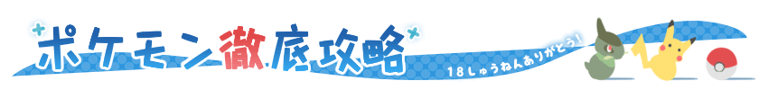

色々メモ
検索くん
とりあえずメモ
とりあえずのメモ
国
日本
中国
アジア
ヨーロッパ
金融
一般
証券
AML
プログラミング
HTML
CSS
リンク集 - HTML
原色大辞典
16進数とRGBの変換
htmlでの折り畳み方法
リンク集 - Git Hub
Git Hub
リンク集 - SOAP
@IT（WSDL：WEBサービスの基本）
SOAPのWSDLについて（個人ブログ）
言語
各国の言葉
例文集
英語
イタリア語
その他一般常識
数学
化学
物理
統計学
ゲーム
ポケモン
ポケモンのメモ

ポケモン王国
ポケモンGo：タスク一覧
グラブル
Saga
アナデン
アナデンwiki
スポーツ
ニュース・データ
Yahoo!ニュース
スポナビ
Siraida
公式サイト
マリノス
ブレイブサンダース
ヤクちゃん
外国新聞
アメリカ：NY Times
フランス：Le Figaro
イタリア：Gazzetta
スペイン：El Pais
中国：新華通信
その他
オンラインショップ
湖池屋
鳥
日本の野鳥
お茶
お茶の種類
お肉の部位
各種お肉の部位
細かい牛肉の部位
ストレッチ・筋トレ
スマホ首のストレッチ
肩こりの筋トレ
脂肪肝の筋トレ
テスト
タグ付けテスト